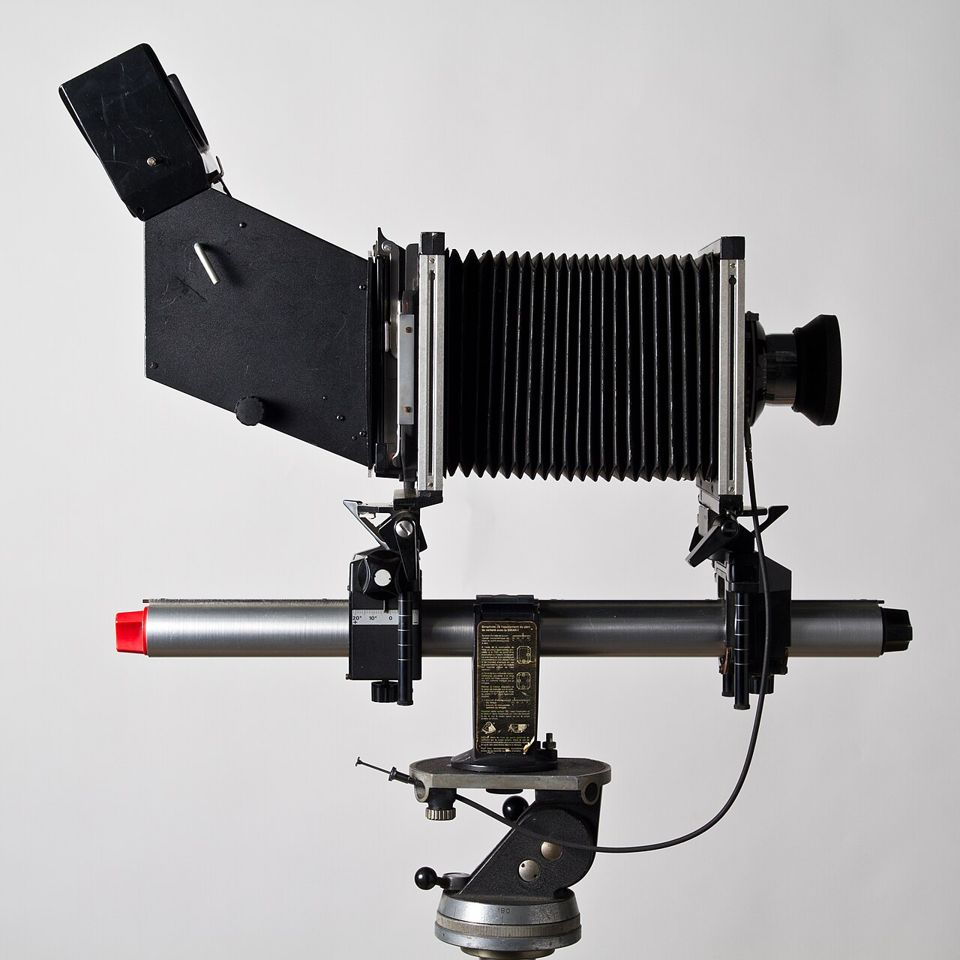
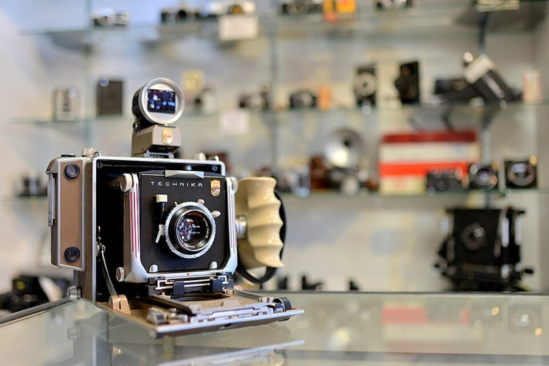
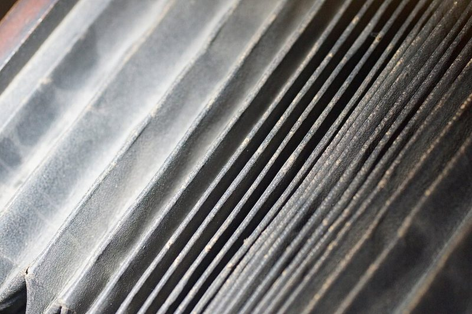

대형 뷰카메라 Large format · 4×5
시트 필름을 한 장씩 넣어 찍습니다. 렌즈와 필름면을 기울이는 무브먼트로 원근과 초점면을 조절합니다.


어떻게 찍히나요
앞쪽 렌즈판과 뒤쪽 필름판을 주름 상자(벨로즈)로 연결한 구조입니다. 뒤쪽 젖빛 유리에 거꾸로 맺힌 상을 천을 덮어쓰고 보며 초점을 맞춘 뒤, 시트 필름이 든 홀더를 끼워 한 장씩 찍습니다. 앞뒤 판을 기울이고 옮기는 '무브먼트'로 건물이 기울어 보이지 않게 하거나 초점면을 비스듬히 만들 수 있습니다.
이런 분께 추천
- 건축·풍경을 최고 화질로 남기고 싶은 분
- 한 장 한 장 천천히 찍는 과정을 즐기는 분
- 직접 현상까지 해 볼 생각이 있는 분
좋은 점과 아쉬운 점
- 좋은 점
- 최고 화질, 건축·풍경
- 아쉬운 점
- 삼각대 필수, 한 장 한 장 느림
대표 기종
Chamonix · Linhof Technika · Sinar · Intrepid
대략적인 가격
100만 원 이상
어울리는 필름
중고로 살 때 확인할 것
- 벨로즈(주름 상자)에 빛이 새는 구멍이 없는지 어두운 곳에서 손전등으로 확인

주름 상자(벨로즈). 접히는 모서리가 닳아 바늘구멍이 생기기 쉬우니, 어두운 방에서 안쪽에 손전등을 넣고 빛이 새는지 봅니다. - 렌즈는 셔터가 달린 대형용 렌즈판 규격과 맞는지
- 필름 홀더, 다크클로스, 삼각대, 루페까지 예산에 포함